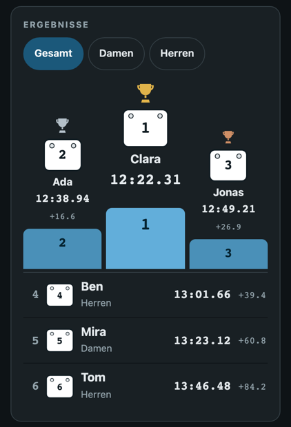
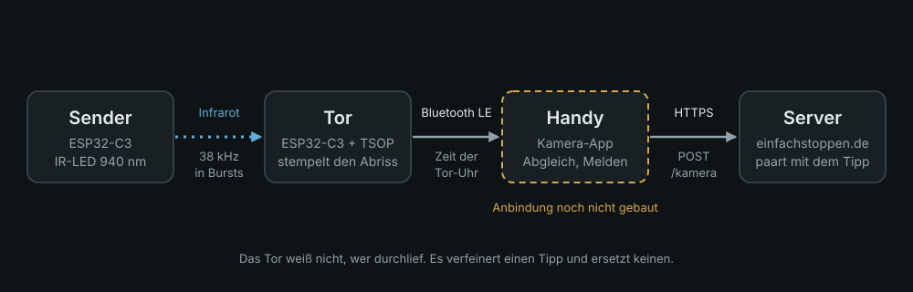
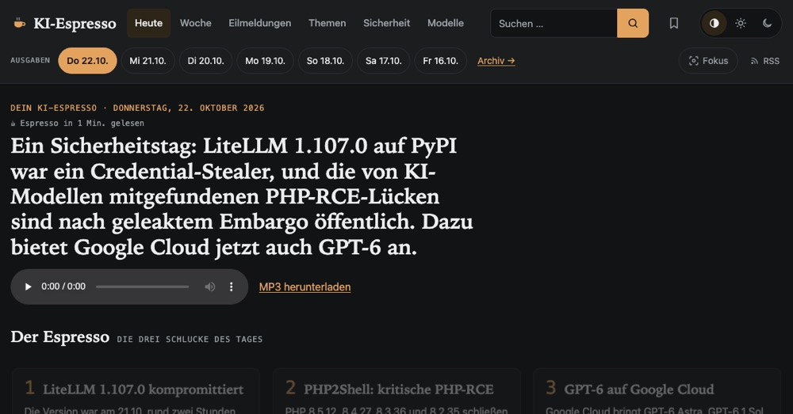
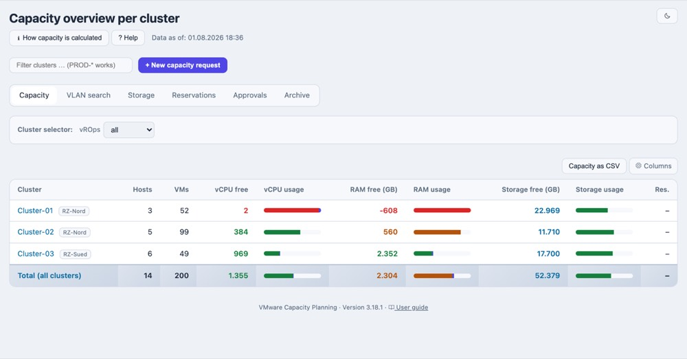
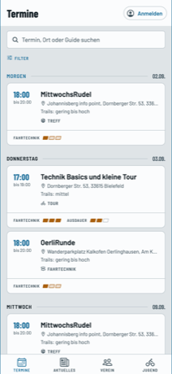
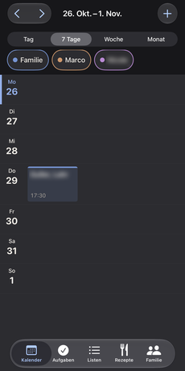
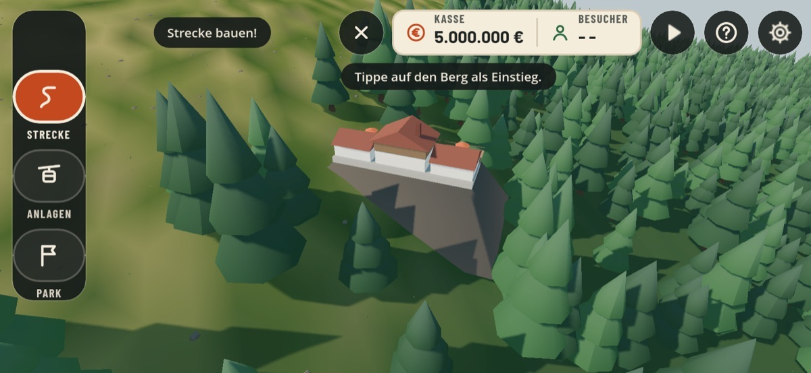
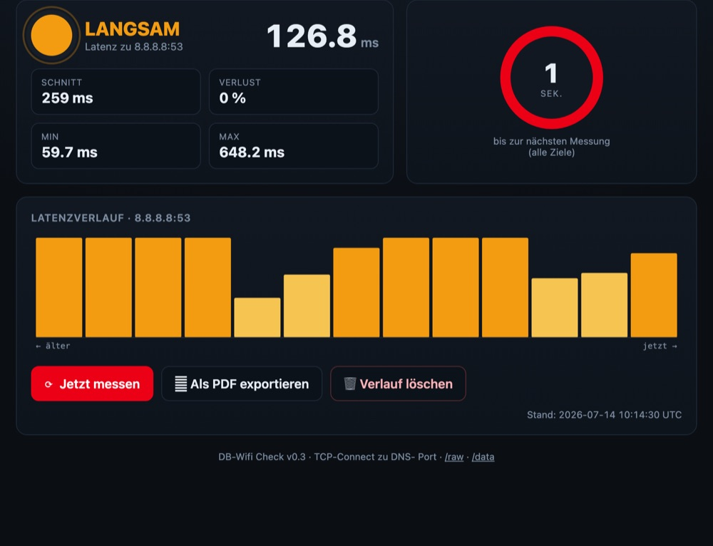

Teamleiter · Bastler · Mountainbiker
Hallo, ich bin Marco.
Tagsüber leite ich ein Team in der IT. Abends baue ich mit Claude Dinge, die ich selbst brauche – vom Zeitmesser fürs Rennen bis zur KI-Morgenzeitung. Hier ist, was dabei herausgekommen ist.
Teamleiter · Bastler · Mountainbiker
Tagsüber leite ich ein Team in der IT. Abends baue ich mit Claude Dinge, die ich selbst brauche – vom Zeitmesser fürs Rennen bis zur KI-Morgenzeitung. Hier ist, was dabei herausgekommen ist.
Zeitmessung fürs Rennen – Web-App, Zeittor und Kamera, und ein Comic dazu.
einfachstoppen in 38 Sekunden: vom Zettel mit „Wer war zuerst?“ bis zum Treppchen.

Rennen stoppen mit zwei Handys. Kein Konto, keine Installation.

Lichtschranke und Kamera-App als genauere Zeitquellen für einfachstoppen.

Jeden Morgen die KI-Nachrichten auf Deutsch, zum Lesen und Hören.

Wie viel Platz ist in VMware- und Kubernetes-Clustern frei, und wer hat schon reserviert? Liest Aria Operations und Prometheus.

Termine, Anmeldungen und Fotoalben für den Verein.
Kein Link: steht in keinem App Store.

Familienkalender fürs iPhone und iPad: Termine, Aufgaben, Listen und Rezepte, mit Abgleich zu Outlook.
Kein Link: nur für die Familie, per TestFlight.

Strecken in den Ettelsberg zeichnen und Besucher anlocken.
Kein Link: noch nicht veröffentlicht.
Zitadel-Projekte als NetBird-Gruppen, auch mit NetBird Cloud.
Ein Chat-Bot, der mein Home Assistant vom Handy aus bedient.

Misst im Cluster, wie schnell DNS-Server antworten.